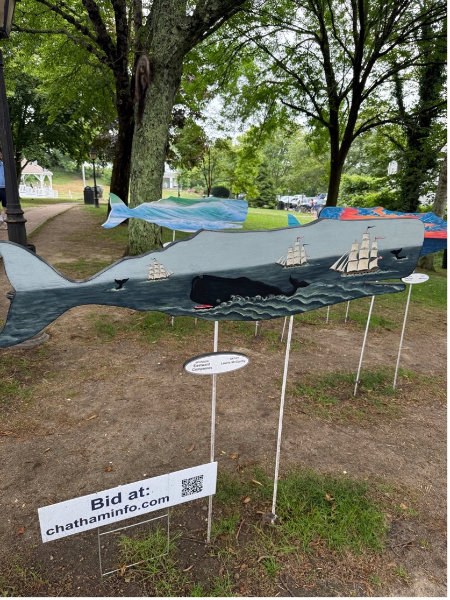

Cape Cod is full of experiences to suit every traveler. Whether you’re looking to relax by the ocean, explore history, or enjoy nature, there’s something here for everyone. Use our guide to find activities, events, and local favorites that will make your trip unforgettable.
Relax on the Beaches
Spend the day soaking up the sun on Cape Cod’s sandy shores or take a peaceful stroll along the water. Many beaches offer seasonal passes and family-friendly areas for a safe, fun visit.
- National Seashore
- Nauset Beach
- Lighthouse Beach
- Grays Beach
- The Beachcomber
- Nauset Light Beach
Explore the Lighthouses
Step back in time with a visit to Cape Cod’s historic lighthouses. Each one tells a story of history and offers incredible photo opportunities. Many are open for tours during the warmer months.
- Monomoy Lighthouse
- Wood End Lighthouse
- Southeast Lighthouse

Discover Scenic Trails
Enjoy Cape Cod’s natural beauty by walking or biking its scenic trails. From forest paths to coastal dunes, the trails are a great way to see wildlife and explore the outdoors at your own pace.
- Great Island Trail
- Fort Hill Trail
- Cape Cod Rail Trail
Experience Local Events
Throughout the year, Cape Cod hosts festivals, farmers markets, art shows, and seasonal celebrations. These events are a perfect way to experience the local culture and connect with the community.

Restaurants
Cape Cod offers a variety of dining options to suit every taste. From fresh seafood and cute cafés to fine dining and local specialties, there’s something for everyone. Options include quick lunches, waterfront seafood dinners, and local desserts.
Boston Magazine’s Cape Cod Restaurants
New England Wanderlust Waterfront Dining